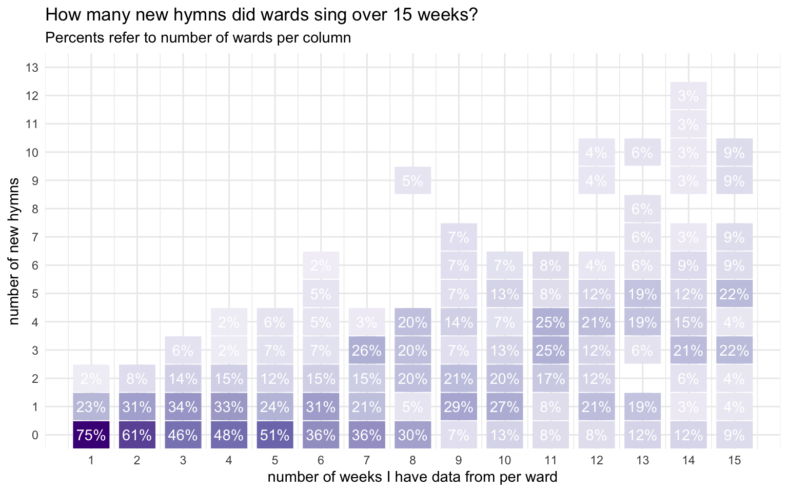
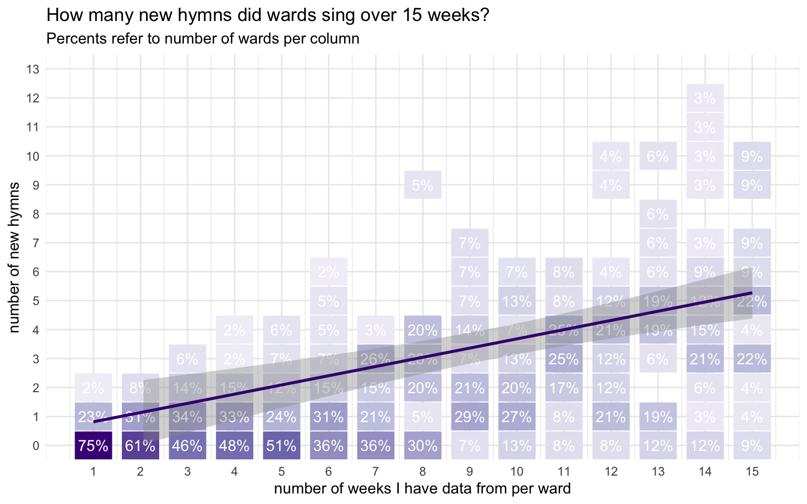

| Number of wards I have data from, by week | |
|---|---|
| Since June 2 | |
| date | wards |
| June 02 | 125 |
| June 09 | 98 |
| June 16 | 114 |
| June 23 | 134 |
| June 30 | 123 |
| July 07 | 114 |
| July 14 | 134 |
| July 21 | 136 |
| July 28 | 140 |
| August 04 | 136 |
| August 11 | 131 |
| August 18 | 135 |
| August 25 | 137 |
| September 01 | 136 |
| September 08 | 105 |
The First Batch of New Hymns!
general
frequency
new hymns
On May 30th, the church released the first batch of new hymns. I have done posts on how those hymns have been used during the first, second, and third weeks since their release, but this page covers the 15 weeks between when the first and second batches came out. When I get more data from this period I will update this page, but it will largely remain as is. Currently I have data from 1,898 sacrament meetings between June 2nd and September 8th from 307 wards. For now, I’ll just focus on hymns 1001–1009 and will wait to bring in the new holiday hymns later on.
But first, here’s how much data I have for each week, just so you have an idea of what I’m working with.
How many wards are singing new hymns each week?
The following plot shows the number of new hymns sung per ward each week between the first and second batches of the new hymns.

During this period, the number of wards that have sung new hymns has been remarkably stable. Typically, only about a quarter to a third of wards sing new hymns each week. A small number sing two each week. There are rare cases of three or more, but they are so infrequent, I’ve left them off this chart.
For each number of new hymns per week, I’ve overlaid a smooth to show the general trend. What I like about it is that is gives a shaded area showing where the proportions typically occur. Anything outside of those could be considered exceptional in some way. In this period here is one week that kinda stands out: August 4th. For some reason, that was the week where the fewest wards sang new hymns. I have no explanation for why that would be. Even when competing with holidays like Father’s Day, the martyrdom of Joseph Smith, and Pioneer Day, the number of new hymns per week stayed consistent. But a random week in early August had fewer—albeit by a small margin.
How many new hymns do wards typically sing?
Another way of looking at the data is to consider how many new hymns a ward typically sang in the 15 weeks between the first and second batches. Did a lot of wards sing one a week? Just one the entire time? What is the typical number of new hymns a ward has sung during this period?
It’s hard to say for sure with the data I have because most of it comes from scattered contributions from various wards. Many wards in this sample contributed data from multiple weeks, but might have missed one or two because of stake conference or whatever other reason. So, if I’ve only got ten weeks of data from a particular ward during this 15 week period, and in none of those 10 did they sing new hymns, it’s impossible to say whether they sang none at all or because I just happened to not get data from the weeks that they did sing new hymns.
I took a look at the 21 wards that I have data from from at least 90% of the 15 weeks in this period. About 15 of those wards didn’t sing any new hymns, with the most number of wards sing five. But, that’s only based on 21 wards and not the complete dataset, so it might not be the best bit of information.
So, I decided to look at all the data I have and organize it a little differently. For each ward, I counted how many weeks’ worth of data I have as well as how many new hymns they sang. The following plot shows this data organized kinda like a table. It’s a little hard to interpret at first, so let me explain (and you may want to click on the “plot with annotations tab” to help with interpretation). The numbers in each column add up to 100%. So, to go back to the previous paragraph, of the wards I have fifteen weeks of data, 23% of them sang five new hymns. Of the wards I have nine weeks of data from, 43% of them sang just one new hymn. Across the plot, higher numbers are accompanied by darker rectangles.



So, in this plot, there is a general trend upward: the more data I have from a ward (so, the further left go you in the plot), the more new hymns I see in their data (the darker cells are higher up). I’ve illustrated this by overlaying a line that tries to capture this trend as best as possible (which you can see by clicking on the “plot with line tab”). The takeaway here is that the line suggests that the typical ward introduces a new hymn about once every three weeks.
For the statisticians there, it’s just a simple linear regression line with an intercept of 0.21, a slope of 0.333, and a p-value < 0.001. The adjusted r-squared is 0.21
So, while this technically shows the number of new hymns I have from each ward given the amount of data I have in that ward, I think it’s safe to interpret as the number of hymns wards are likely to sing after that many weeks since the release of the new hymns. So, after nine weeks (so, by July 28th), we can estimate that about 43% of wards have sung just one new hymn. This is a safe interpretation as long as the rate at which wards introduce new hymns is consistent during these 15 weeks (and judging from the plot in the previous section, that might be true) and if there’s not a systemtic bias against not getting data when a ward is more or less likely to sing a new hymn (which I can’t imagine being the case). It’s not a perfect interpretation, but it’s another look at the data.
What hymns are most popular?
It should come as no surprise that the most popular hymn in this new batch is
Note that these numbers might be slightly inflated because some wards have sung the more popular hymns more than once.
| Approximate percentage of wards new hymns have been sung in | |
|---|---|
| Between June 2 and September 8 | |
| Hymn | percent of wards |
| Come, Thou Fount of Every Blessing (1001) | 91.9% |
| It Is Well with My Soul (1003) | 68.1% |
| As Bread is Broken (1007) | 53.1% |
| I Will Walk with Jesus (1004) | 47.5% |
| Bread of Life, Living Water (1008) | 46.0% |
| His Eye Is on the Sparrow (1005) | 45.2% |
| Gethsemane (1009) | 24.6% |
| When the Savior Comes Again (1002) | 22.2% |
| Think a Sacred Song (1006) | 14.3% |
Overall then, it seems like the hymns have been pretty well-incorporated into regular singing. An overwhelming majority of wards have sung
(For a complete version of this table that includes all hymns, see here.)
What hymns are most popular each week?
We can see to see a glimpse of how the adoption of these new hymns has ebbed and flowed and how each hymn has been introduced. The figure below shows what proportion of wards sang what hymns each week, given that they sang a new hymn that week. So, we’re only focused on wards that have used these hymns.
There are a few other major trends so far.
When during meetings are these hymns sung?
We can see when these hymns tend to be sung and get an overall look at the popularity of the first batch of hymns.
| When were new hymns sung in sacrament meeting? | ||||
|---|---|---|---|---|
| Between June 2 and September 8 | ||||
| New Hymn | Opening | Sacrament | Intermediate | Closing |
| Come, Thou Fount of Every Blessing (1001) | 39% | 1% | 21% | 38% |
| When the Savior Comes Again (1002) | 22% | 3% | 44% | 31% |
| It Is Well with My Soul (1003) | 27% | 0% | 26% | 46% |
| I Will Walk with Jesus (1004) | 27% | 0% | 39% | 33% |
| His Eye Is on the Sparrow (1005) | 30% | 2% | 35% | 32% |
| Think a Sacred Song (1006) | 21% | 0% | 37% | 37% |
| As Bread is Broken (1007) | 0% | 90% | 6% | 1% |
| Bread of Life, Living Water (1008) | 0% | 91% | 1% | 6% |
| Gethsemane (1009) | 15% | 32% | 21% | 32% |
Each hymn has its own story. Unsurprisingly, the hymns that are most likely to be sacrament hymns are
Conclusion
This post shows a handful of trends in the first batch of hymns in the first 15 weeks since their release. Again, this is only based on 1898 sacrament meetings from 307 wards. It’s not an insignificant amount of data, but it is just a sliver of the many wards across the country and the world. As always, I’m collecting more data and if you’d like to contribute your ward’s data, you can do so here.